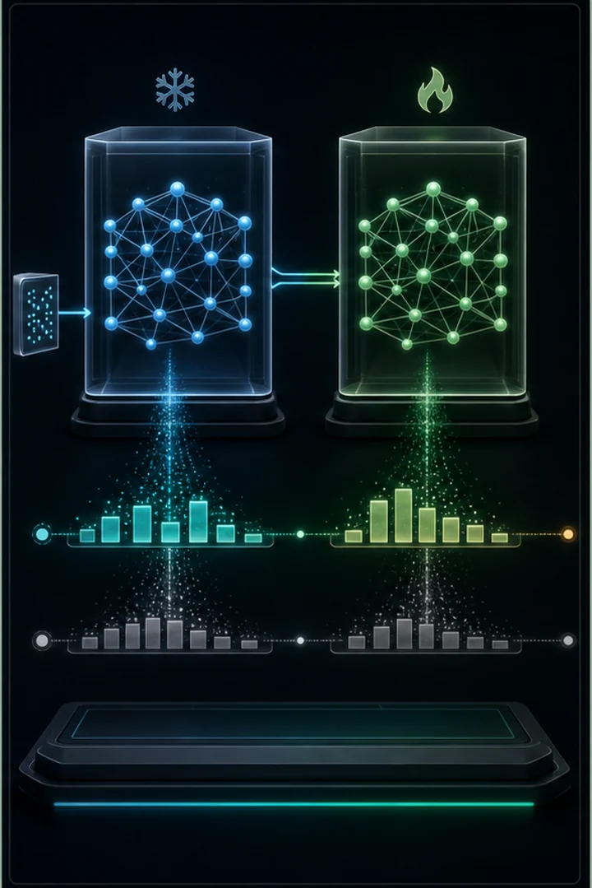
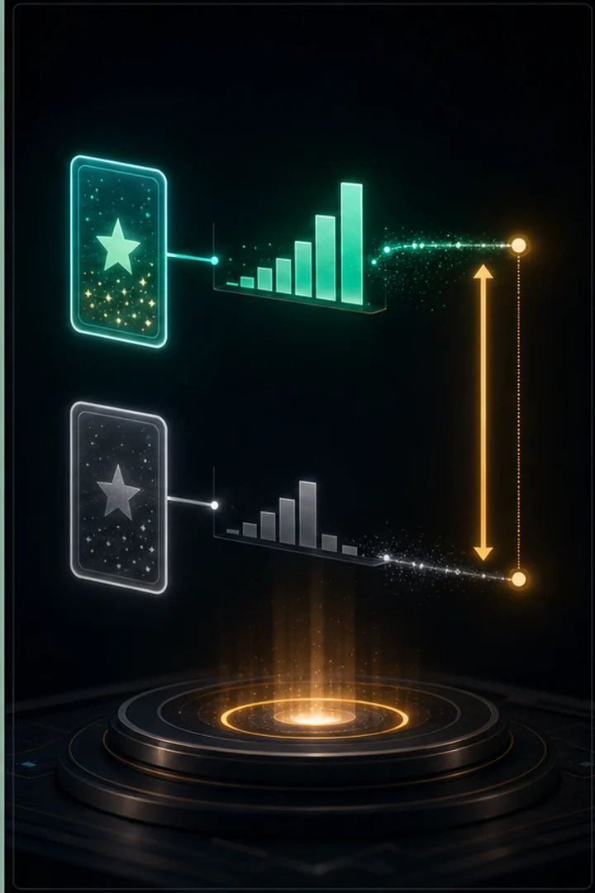

Instruction tuning only shows the model good answers. Preference tuning teaches it to prefer a chosen response over a rejected one. The 2026 standard is DPO (Direct Preference Optimization): where classic RLHF needs three models and a reinforcement-learning loop, DPO does it with a single, simple loss.
Starting from the #12 model and a frozen reference copy, DPO widens the chosen-vs-rejected gap from +54 to +96 — with no reward model and no RL. This is essentially how modern open models are aligned today.
Classic RLHF aligns a model in three stages: collect human preferences, train a separate reward model, then optimize the policy against it with reinforcement learning (PPO) under a KL penalty. It works but is heavy and unstable — three models and an RL loop.
DPO's insight is that the RLHF objective has a closed-form optimum linking the reward to the log-ratio between the policy and a frozen reference model. That lets you skip the reward model and the RL entirely and optimize preferences directly with a simple binary-classification loss on (chosen, rejected) pairs. The coefficient β controls how far the policy may drift from the reference (an implicit KL constraint). Same alignment effect, far simpler and more stable — today's stacks chain SFT → DPO → GRPO/RLVR for reasoning.



import importlib.util
import os
import torch
import torch.nn.functional as F
# Reuse the model + tokenizer from #9, and the prompt template from #12.
spec = importlib.util.spec_from_file_location("tiny_gpt", "09_tiny_gpt.py")
tg = importlib.util.module_from_spec(spec)
spec.loader.exec_module(tg)
DEVICE = tg.DEVICE
BLOCK_SIZE = tg.BLOCK_SIZE
SFT_PATH = "tiny_gpt_chat.pt" # the instruction-tuned model from #12
DPO_PATH = "tiny_gpt_dpo.pt" # output of this script
BETA = 0.1 # how strongly to trust the preferences vs. the reference
DPO_STEPS = 400
LR = 5e-5 # preference tuning uses a small learning rate
def prompt_of(instruction):
return f"QUESTION: {instruction}\nANSWER: "
# (instruction, CHOSEN response, REJECTED response). Same safe vocab as #12.
PREFERENCES = [
("how are you", "i am well, i thank you.", "none of your business."),
("say hello", "good morrow to you, friend.", "go away."),
("who are you", "i am your humble servant.", "i shall not say."),
("are you happy", "yes, my heart is glad.", "no, i am wretched."),
("good night", "sleep well, sweet friend.", "leave me alone."),
("praise the king", "long live the noble king.", "the king is a fool."),
("what is love", "love is a gentle madness.", "love is for fools."),
("say farewell", "farewell, and good night.", "begone from here."),
]
def sequence_logprob(model, instruction, response):
"""Sum of log-probabilities the model assigns to the RESPONSE tokens.
We mask out the prompt: only the response's likelihood counts, exactly the
quantity DPO compares between chosen and rejected.
"""
prompt = prompt_of(instruction)
full = prompt + response + "\n"
ids = tg.encode(full)
x = torch.tensor([ids[:-1]], device=DEVICE)
y = torch.tensor(ids[1:], device=DEVICE)
logits, _ = model(x) # (1, T, vocab)
logprobs = F.log_softmax(logits[0], dim=-1) # (T, vocab)
token_lp = logprobs[torch.arange(len(y)), y] # logprob of each actual token
prompt_len = len(tg.encode(prompt))
return token_lp[prompt_len - 1:].sum() # response tokens only
def load_model(path):
model = tg.TinyGPT().to(DEVICE)
model.load_state_dict(torch.load(path, map_location=DEVICE)["model"])
return model
def margins(model):
"""Average (chosen - rejected) logprob gap, and how often chosen wins."""
with torch.no_grad():
gaps = [sequence_logprob(model, i, c) - sequence_logprob(model, i, r)
for i, c, r in PREFERENCES]
gaps = torch.stack(gaps)
return gaps.mean().item(), (gaps > 0).float().mean().item()
def dpo_train():
# Policy = the model we optimise. Reference = a FROZEN copy of the SFT model.
policy = load_model(SFT_PATH)
reference = load_model(SFT_PATH)
reference.eval()
for p in reference.parameters():
p.requires_grad_(False)
optimizer = torch.optim.AdamW(policy.parameters(), lr=LR)
print("training with DPO (chosen > rejected)...\n")
for step in range(DPO_STEPS + 1):
instruction, chosen, rejected = PREFERENCES[
torch.randint(len(PREFERENCES), (1,)).item()]
# Log-probs under the policy (with gradient)...
pi_chosen = sequence_logprob(policy, instruction, chosen)
pi_rejected = sequence_logprob(policy, instruction, rejected)
# ...and under the frozen reference (no gradient).
with torch.no_grad():
ref_chosen = sequence_logprob(reference, instruction, chosen)
ref_rejected = sequence_logprob(reference, instruction, rejected)
# The DPO loss: prefer chosen over rejected, relative to the reference.
logits = BETA * ((pi_chosen - ref_chosen) - (pi_rejected - ref_rejected))
loss = -F.logsigmoid(logits)
optimizer.zero_grad(set_to_none=True)
loss.backward()
optimizer.step()
if step % 100 == 0:
print(f"step {step:4d} loss {loss.item():.3f}")
torch.save({"model": policy.state_dict(), "chars": tg.chars}, DPO_PATH)
print(f"\nsaved DPO model -> {DPO_PATH}")
return policyif not os.path.exists(SFT_PATH):
raise SystemExit("No tiny_gpt_chat.pt — run `python 12_finetune.py` first.")
sft = load_model(SFT_PATH)
before_gap, before_acc = margins(sft)
print(f"BEFORE DPO (the SFT model from #12):")
print(f" mean chosen-minus-rejected logprob gap: {before_gap:+.2f}")
print(f" chosen preferred in {before_acc:.0%} of pairs\n")
if os.path.exists(DPO_PATH):
policy = load_model(DPO_PATH)
print(f"loaded existing DPO model from {DPO_PATH} "
f"(delete it to re-run)\n")
else:
policy = dpo_train()
after_gap, after_acc = margins(policy)
print(f"\nAFTER DPO:")
print(f" mean chosen-minus-rejected logprob gap: {after_gap:+.2f}")
print(f" chosen preferred in {after_acc:.0%} of pairs")
print(f"\nThe gap widened from {before_gap:+.2f} to {after_gap:+.2f}: the "
f"model now\nassigns much MORE probability to the preferred answers "
f"than to the\nrejected ones — without a reward model or any RL. "
f"That is DPO, and it\nis essentially how modern open models are "
f"aligned today.")BEFORE DPO (the SFT model from #12): mean chosen-minus-rejected logprob gap: +54.22 chosen preferred in 100% of pairs loaded existing DPO model from tiny_gpt_dpo.pt (delete it to re-run) AFTER DPO: mean chosen-minus-rejected logprob gap: +96.27 chosen preferred in 100% of pairs The gap widened from +54.22 to +96.27: the model now assigns much MORE probability to the preferred answers than to the rejected ones — without a reward model or any RL. That is DPO, and it is essentially how modern open models are aligned today.